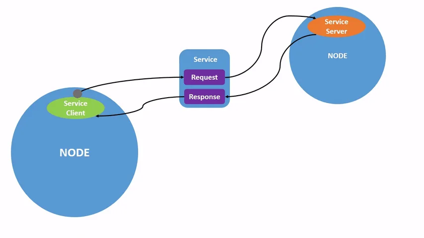
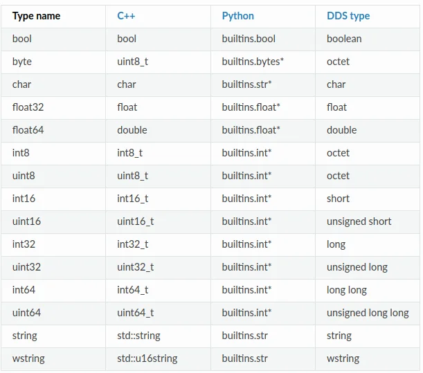
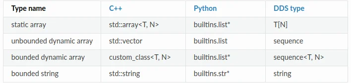
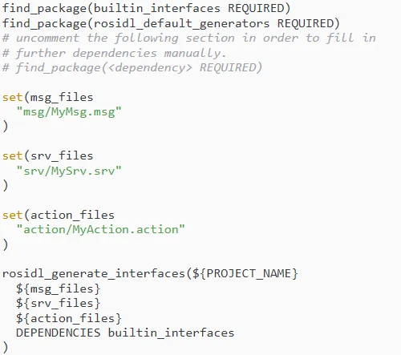

ROS2 입문 7차시 - ROS2 복습 (1)¶
ROS2 복습_1¶
ROS2 소개 및 기본 사용법 Topic
최적화팁¶
ROS2 소개 및 기본 사용법 Service

ROS2 소개 및 기본 사용법 Action
ROS2 인터페이스(Topic, Service, Action) 최적화
-
ROS2에서의 액션은 목표 전달(send_goal), 목표 취소(cancel_goal), 결과 받기(get_result)를 위한 토픽과 서비스 통신을 혼합하여 사용
-
비동기 방식에서 원하는 타이밍에 적절한 액션 수행을 위해 목표 상태(goal_state)에 도입하여, 목표 전달 후 상태 머신을 구동하여 액션 프로세스 추적
Message¶
프로그래밍 규칙 Python Style
기본규칙¶
- Python 3(Python 3.5 이상)
라인길이¶
- 최대100 문자
이름규칙(Naming)¶
- CamelCased, snake_case, ALL_CAPITALS 만사용 CamelCased: 타입, 클래스 snake_case: 파일, 패키지, 인터페이스, 모듈, 변수, 함수, 메소드 ALL_CAPITALS: 상수 Python Enhancement Proposals(PEPs)의PEP 8을준수 Wiki 참고: https://wiki.ros.org/PyStyleGuide
ROS2 Setup Tips
rosdep¶
- 의존성 관리 툴인rosdep 명령어를 사용하면 손쉽게 패키지의 의존성 문제를 해결
- rosdep은 패키지 환경 설정 파일인package.xml의
옵션과 같은 의존성 정보를 확인하여 의존성 패키지들을 설치해 주기 때문에 의존성 패키지가 많은 패키지의 경우, 위 명령어를 사용하면 의존성 패키지 설치 및 관리에 있어서 매우 편하게 사용 가능
ROS2 Setup Tips Namespace
사용방법¶
- ns 명령 사용 1. ROS의 변수 중 하나인ns(namespace)를입력 2. 복수의namespace 생성
Package 생성¶
package.xml¶
- 패키지에 대한 메타 정보를 포함하는 파일(패키지의 신분증 역할)
- 이 파일은 패키지 이름, 버전, 저작자, 라이센스 등의 정보를 정의하며, 패키지의 의존성 패키지와 메시지, 서비스, 액션 등의 정의된 인터페이스 정보도 포함
- 사용 목적
- 소스 코드를 실제 실행 가능한 프로그램이나 라이브러리로 변환하기 위해colcon build를 수행하면package.xml을 참조하여, 빌드할 패키지들 사이의 의존성 해석 및 적절한 빌드 순서 결정
-
또한, 패키지 의존성 설치 시rosdep이 이 파일의 정보를 기반으로 함
-
description, maintainer, license 채우기
- 위 코드 바로 아래 의존성 코드 복사해서 붙여 넣기
태그는 해당ROS 패키지가 실행되기 위해 필요한 의존성을 지정하는데 사용 - rclpy: ROS2의python 클라이언트 라이브러리
- 해당 패키지가 실행될 때rclpy 라이브러리에 의존한다는 것을 나타냄(즉, python을 사용한ROS2 노드를 실행하는 데 필요한 라이브러리)
- std_msgs: ROS에서 기본적으로 제공하는 메시지 타입들의 모음ex) String, Int32, Float64 등
- 해당 패키지가 실행될 때std_msgs 메시지 라이브러리에 의존한다는 것을 나타냄
- 이러한 의존성은 패키지를 빌드하거나 실행할 때 필요한 외부 패키지나 라이브러리를ROS 빌드 도구에게 알려 주는 역할 따라서ROS 빌드 도구는 이 정보를 사용하여 필요한 의존성을 먼저 설치하거나 빌드할 수 있음
Package.xml 설정¶
setup.py & setup.cfg
setup.cfg¶
- 패키지 빌드/설치/배포에 사용(버전/설명/패키지 의존성 관리 등)
- setuptools를 사용하여 패키지를 배포 준비 시 필요한 정보 제공
- Python 패키지에 대한 선언적인 구성 정보를 제공하며, setuptools의 빌드 및 설치 과정에서 활용
- 주로 패키지 버전, 설명 등이 여기에 정의됨
setup.py¶
- setuptools를 사용하여 패키지를 배포할 준비를 할 때, 필요한 정보를 담고 있음
- Python 패키지에 대한 프로 그래 매 틱한 구성 정보를 제공하며, setuptools를 통한 빌드 및 설치 과정에서 사용됨
- Python 패키지의 설치 스크립트
- 주로 패키지 버전, 설명, 의존성 등을 포함한 설치 스크립트 역할
- setuptools 라이브러리를 사용, 패키지를 빌드하고 설치하는 데 필요한 설정 포함
ROS2에서의역할¶
- Python 기반의ROS2 패키지에 대해colcon 은setup.cfg(및setup.py)를 사용하여 패 키 지의 설치를 처리
- setup.cfg, setup.py는setuptools를 통해 패 키 지를 빌드하고 설치하는 방법에 대한 구 성 정보를 제공
- ament_python 패키지 빌드 타입을 사용하는 경우, 파일의 설정이 빌드 과정에 영향을 줄 수 있음
CMakeLists.txt
CMakeLists.txt와setup.py/setup.cfg, package.xml간의비교¶
- CMakeLists.txt
- C/C++ 프로젝트에서 주로 사용됨
- 코드 컴파일 및 링크 설정
- ROS2 메시지 및 서비스 생성 같은 더 광범위한 작업 지원
- 빌드 시 필요한 지침을 담고 있으며, 주로 코드 컴파일과 관련이 깊음
- setup.py/setup.cfg
- Python 패키지의 빌드 및 설치 과정 설정에 사용됨
- 주로Python 관련 설정에 집중
- Pacakge.xml
- 패키지의 메타 데이터와 의존성을 관리하는 데 중점
- CMakeLists.txt와 함께 작동하여ROS2 패키지의 빌드와 배포를 가능하게함
세파일의공통점¶
- CMakeLists.txt, setup.py/setup.cfg, package.xml 모두 패키지의 빌드 및 설치 과정에서 의존성 관리와 설정 정의에 사용 Python을 이용한 패키지 생성 실습
패키지소스분석¶
-
timer_callback 함수 1. 이 콜백 함수는 타이머에 의해 주기적으로 호출 2. 'Hello World: [count]' 형식의 메시지를 생성하고 해당 메시지를 발행 3. 또한 해당 메시지를로 깅하여 화면에 출력
-
main 함수 1. ROS2를 초기화 2. MinimalPublisher 클래스의 인스턴스를 생성하고, rclpy.spin()을 사용하여 이 노드를 실행 3. 이 함수는 노드가 종료될 때까지 메시지를 계속 발행하게함 4. 노드와ROS2를 적절히 종료
-
메인 실행
- 스크립트가 직접 실행되면main() 함수를 호출하여 위의 모든 로직을 시작
의존성추가¶
- setup.py 설정
setup.py 설정¶
- setup.py 파일 열고 수정하기(package.xml 파일과 동일하게 작성)
- entry_points 필드 부분에talker 추가하기(추가 후 저장하기)
setup.py 설정¶
- entry_points
- entry_points는Python의setuptools에서 사용되는 설정의 일부
- 특히python 패키지를 설치할 때 커맨드 라인 스크립트를 자동으로 생성하도록 지시하는데 사용
- console_scripts
- console_scripts는entry_points의 하위 항목으로, 커맨드 라인에서 실행할 수 있는 스크립트를 지정
- 'talker = py_pubsub.publisher_member_function:main'
- 이 항목은'talker'라는 커맨드 라인 명령어를 생성하라는 지시
- 사용자가 커맨드 라인에서talker라고 입력하면, py_pubsub.publisher_member_function 모듈의 main 함수가 실행
- 결과적으로, 이 설정을 사용하여python 패키지를 설치하면, 사용자는 커맨드 라인에서 바로 talker 명령어를 사용하여 해당 기능을 실행할 수 있게 됨
- ROS2에서python 노드를 쉽게 실행할 수 있도록하는 데 특히 유용함
- 이러한 방식을 통해ROS2는Python 스크립트를 바로 실행할 수 있는 실행 가능한 커맨드를 제공
Subscriber code 분석¶
- Imports
- import rclpy ROS2의Python 클라이언트 라이브러리를 가져옴
- from rclpy.node import Node Node 클래스를 가져 와 노 드를 생성, 관리하는 데 필요한 기능을 사용
- from std_msgs.msg import String ROS2의 표준 메시지 패키지에서String 메시지 유형을 가져옴
- MinimalSubscriber 클래스
- 이 클래스는ROS2 노드로 동작하며, 주요 기능은 메시지 구독
-
init 메서드
-
노드의 초기화를 수행
- create_subscription: 주어진 토픽에 대한 구독자를 생성(여기서 토픽 이름은'topic'이고, 메시지 유형은String) 메시지가 토픽에 게시될 때마다listener_callback 함수가 호출됨
-
listener_callback 메서드
-
토픽에 게시된 메시지를 수신할 때 호출되는 콜백 함수
- 수신된 메시지의 내용을 로그에 출력
Subscriber code 분석¶
- main 함수
- ROS2를 초기화
- MinimalSubscriber 클래스의 인스턴스를 생성
- rclpy.spin : 이벤트루프를 시작하여 콜백을 계속 호출하게 됨 (메시지가 게시될 때마다listener_callback 함수가 호출됨)
- destroy_node : 노드를 명시적으로 파괴(선택적, 가비지 수집기에 의해 자동으로 처리될 수 있음)
- rclpy.shutdown : ROS2를 종료하고 모든 리소스를 해제
- 메인 실행
- 스크립트가 직접 실행되면main 함수를 호출(스크립트를 모듈로 임 포트 할 때, main 함수가 자동으로 호출되지 않음)
- 전반적으로 이 코드는ROS2를 사용하여'topic'이라는 토픽에서String 메시지를 구독하고, 해당 메시지의 내용을 로그에 출력하는 간단한 구독자 노드를 구현
토픽, 서비스, 액션 인터페이스 인터페이스(Interface) 신규 작성
인터페이스(Interface)¶
- ROS에서노드 사이에 데이터를 전송 시 사용되는 토픽(Topic), 서비스(Service), 액션(Action) 에서 사용되는 데이터 타입
- 토픽은msg 파일, 서비스는srv 파일, 액션은action 파일에 인터페이스가 정의
- 일반적으로std_msgs나geometry_msgs와 같은 미리 선언된 인터페이스를 바로 사용 가능하나, 필요에 따라 커스 텀 인터페이스 생성 가능
- 단일 패키지를 가진 프로그램에서 사용시, 해당 패키지 포함시키기도하지만, 일반적으로 단 일 패키지를 가지는 프로그램을 만드는 경우는 거의 없음
- 여러 개의 패키지를 가지는 경우, 별도의 인터페이스 패키지를 생성하여 사용하는 것을 추천 (이 경우 여러 패키지들이 만들어진 인터페이스 패키지를 공유하며 사용 가능)
토픽, 서비스, 액션 인터페이스 인터페이스 패키지 생성 - Service, action, msg를 담는 인터페이스 폴더 역시 하나의 패키지로 생성 - 개발 언어가python이라도build-type을ament_cmake로 설정이 필요 - ament_cmake에 는 메시지를include하거나import할 수 있게하는 기능이 있지만, ament_python에는 없음
토픽, 서비스, 액션 인터페이스 인터페이스 패키지 생성 - 아래3개의 폴더 및 파일을 생성 - 파일 명은 반드시 카멜 케이스(CamelCase)만 사용, 만약 첫 문자가 소문자일 경우 빌드 시 오류 발생 - msg/MyMsg.msg - srv/MySrv.srv - action/MyAction.action
토픽, 서비스, 액션 인터페이스 인터페이스 패키지 생성 - 생성한 세 개의 폴더 및 파일에 아래와 같이 작성 - msg/MyMsg.msg - srv/MySrv.srv - action/MyAction.action
토픽, 서비스, 액션 인터페이스 패키지 설계
인터페이스패키지수정¶
CMakeList.txt ArithmeticChecker.action ArithmeticArgument.msg ArithmeticOperator.srv
토픽, 서비스, 액션 인터페이스 인터페이스 패키지 생성


토픽, 서비스, 액션 인터페이스 인터페이스 패키지 생성
Package.xml 파일수정¶
토픽, 서비스, 액션 인터페이스 인터페이스 패키지 생성
CMakeLists.txt 파일수정¶

Visual Studio Code 를이용한패키지생성연습¶
- py_pubsub 패키지 개선하기
- my_ros_msgs 패키지 실습
Jupyter Notebooks¶
7차시_예제_주피터노트북_py_pubsub¶

py_pubsub 패키지를 jupyter에서 실행하는 코드입니다.¶
Subscriber code¶
import rclpy
from rclpy.node import Node
from std_msgs.msg import String
class MinimalSubscriber(Node):
def __init__(self):
super().__init__("minimal_subscriber")
self.subscription = self.create_subscription(
String, "topic", self.listener_callback, 10
)
self.subscription # prevent unused variable warning
def listener_callback(self, msg):
self.get_logger().info(f"I heard: {msg.data}")
# def main(args=None):
# rclpy.init(args=args)
# minimal_subscriber = MinimalSubscriber()
# rclpy.spin(minimal_subscriber)
# minimal_subscriber.destroy_node()
# rclpy.shutdown()
Publisher 코드드¶
# import rclpy
# from rclpy.node import Node
# from std_msgs.msg import String
class MinimalPublisher(Node):
def __init__(self):
super().__init__("minimal_publisher")
self.publisher_ = self.create_publisher(String, "topic", 10)
timer_period = 0.5 # seconds
self.timer = self.create_timer(timer_period, self.timer_callback)
self.i = 0
def timer_callback(self):
msg = String()
msg.data = f"Hello World: {self.i}"
self.publisher_.publish(msg)
self.get_logger().info(f"Publishing: {msg.data}")
self.i += 1
# def main(args=None):
# rclpy.init(args=args)
# minimal_publisher = MinimalPublisher()
# rclpy.spin(minimal_publisher)
# minimal_publisher.destroy_node()
# rclpy.shutdown()
import time
rclpy.init()
minimal_subscriber = MinimalSubscriber()
minimal_publisher = MinimalPublisher()
try:
for _ in range(30):
rclpy.spin_once(minimal_publisher)
rclpy.spin_once(minimal_subscriber)
time.sleep(1.0)
finally:
minimal_subscriber.destroy_node()
minimal_publisher.destroy_node()
rclpy.shutdown()
[INFO] [1745347587.345396758] [minimal_publisher]: Publishing: Hello World: 0
[INFO] [1745347587.363020318] [minimal_subscriber]: I heard: Hello World: 0
[INFO] [1745347588.382281375] [minimal_publisher]: Publishing: Hello World: 1
[INFO] [1745347588.392444829] [minimal_subscriber]: I heard: Hello World: 1
[INFO] [1745347589.397276489] [minimal_publisher]: Publishing: Hello World: 2
[INFO] [1745347589.401492075] [minimal_subscriber]: I heard: Hello World: 2
[INFO] [1745347590.406465800] [minimal_publisher]: Publishing: Hello World: 3
[INFO] [1745347590.412285797] [minimal_subscriber]: I heard: Hello World: 3
[INFO] [1745347591.423198741] [minimal_publisher]: Publishing: Hello World: 4
[INFO] [1745347591.428896320] [minimal_subscriber]: I heard: Hello World: 4
[INFO] [1745347592.437301431] [minimal_publisher]: Publishing: Hello World: 5
[INFO] [1745347592.464249416] [minimal_subscriber]: I heard: Hello World: 5
[INFO] [1745347593.472981225] [minimal_publisher]: Publishing: Hello World: 6
[INFO] [1745347593.478466727] [minimal_subscriber]: I heard: Hello World: 6
[INFO] [1745347594.497613850] [minimal_publisher]: Publishing: Hello World: 7
[INFO] [1745347594.505079717] [minimal_subscriber]: I heard: Hello World: 7
[INFO] [1745347595.510113455] [minimal_publisher]: Publishing: Hello World: 8
[INFO] [1745347595.517906515] [minimal_subscriber]: I heard: Hello World: 8
[INFO] [1745347596.523199037] [minimal_publisher]: Publishing: Hello World: 9
[INFO] [1745347596.528418310] [minimal_subscriber]: I heard: Hello World: 9
[INFO] [1745347597.547920403] [minimal_publisher]: Publishing: Hello World: 10
[INFO] [1745347597.573039215] [minimal_subscriber]: I heard: Hello World: 10
[INFO] [1745347598.603897191] [minimal_publisher]: Publishing: Hello World: 11
[INFO] [1745347598.646759026] [minimal_subscriber]: I heard: Hello World: 11
[INFO] [1745347599.672670776] [minimal_publisher]: Publishing: Hello World: 12
[INFO] [1745347599.702398701] [minimal_subscriber]: I heard: Hello World: 12
[INFO] [1745347600.726534768] [minimal_publisher]: Publishing: Hello World: 13
[INFO] [1745347600.758351270] [minimal_subscriber]: I heard: Hello World: 13
[INFO] [1745347601.764941660] [minimal_publisher]: Publishing: Hello World: 14
[INFO] [1745347601.778125855] [minimal_subscriber]: I heard: Hello World: 14
[INFO] [1745347602.787342286] [minimal_publisher]: Publishing: Hello World: 15
[INFO] [1745347602.796627497] [minimal_subscriber]: I heard: Hello World: 15
[INFO] [1745347603.809495917] [minimal_publisher]: Publishing: Hello World: 16
[INFO] [1745347603.813750236] [minimal_subscriber]: I heard: Hello World: 16
[INFO] [1745347604.825612163] [minimal_publisher]: Publishing: Hello World: 17
[INFO] [1745347604.829793945] [minimal_subscriber]: I heard: Hello World: 17
[INFO] [1745347605.848952911] [minimal_publisher]: Publishing: Hello World: 18
[INFO] [1745347605.869222031] [minimal_subscriber]: I heard: Hello World: 18
[INFO] [1745347606.884785328] [minimal_publisher]: Publishing: Hello World: 19
[INFO] [1745347606.902707266] [minimal_subscriber]: I heard: Hello World: 19
[INFO] [1745347607.908448828] [minimal_publisher]: Publishing: Hello World: 20
[INFO] [1745347607.922098954] [minimal_subscriber]: I heard: Hello World: 20
[INFO] [1745347608.929721433] [minimal_publisher]: Publishing: Hello World: 21
[INFO] [1745347608.934622211] [minimal_subscriber]: I heard: Hello World: 21
[INFO] [1745347609.941516718] [minimal_publisher]: Publishing: Hello World: 22
[INFO] [1745347609.947172148] [minimal_subscriber]: I heard: Hello World: 22
[INFO] [1745347610.952531499] [minimal_publisher]: Publishing: Hello World: 23
[INFO] [1745347610.957460791] [minimal_subscriber]: I heard: Hello World: 23
[INFO] [1745347611.964997774] [minimal_publisher]: Publishing: Hello World: 24
[INFO] [1745347611.969349325] [minimal_subscriber]: I heard: Hello World: 24
[INFO] [1745347613.006396495] [minimal_publisher]: Publishing: Hello World: 25
[INFO] [1745347613.019271631] [minimal_subscriber]: I heard: Hello World: 25
[INFO] [1745347614.027281606] [minimal_publisher]: Publishing: Hello World: 26
[INFO] [1745347614.033271141] [minimal_subscriber]: I heard: Hello World: 26
[INFO] [1745347615.049126482] [minimal_publisher]: Publishing: Hello World: 27
[INFO] [1745347615.055239037] [minimal_subscriber]: I heard: Hello World: 27
[INFO] [1745347616.066164864] [minimal_publisher]: Publishing: Hello World: 28
[INFO] [1745347616.076176764] [minimal_subscriber]: I heard: Hello World: 28
[INFO] [1745347617.081895438] [minimal_publisher]: Publishing: Hello World: 29
[INFO] [1745347617.085371150] [minimal_subscriber]: I heard: Hello World: 29
7차시_주피터완성본_py_srvcli¶

Service code 를 주피터에서 실행될수 있도록 수정한 코드¶
실행 방법 : 코드를 실행하고 다음 셀에서 정수를 입력하고 실행한다.
import rclpy
from rclpy.node import Node
from rclpy.executors import SingleThreadedExecutor
from example_interfaces.srv import AddTwoInts
import threading
import time
# Client Node
class MinimalClientAsync(Node):
def __init__(self):
super().__init__("minimal_client_async")
self.cli = self.create_client(AddTwoInts, "add_two_ints")
while not self.cli.wait_for_service(timeout_sec=1.0):
self.get_logger().info("Service not available, waiting again...")
self.req = AddTwoInts.Request()
def send_request(self, a, b):
self.req.a = a
self.req.b = b
return self.cli.call_async(self.req)
# 전역에서 init()은 한 번만 호출
if not rclpy.ok():
rclpy.init()
executor = SingleThreadedExecutor()
def run_client(a, b):
client_node = MinimalClientAsync()
future = client_node.send_request(a, b)
executor.add_node(client_node)
def spin_until_future_complete():
while rclpy.ok() and not future.done():
executor.spin_once(timeout_sec=0.1)
time.sleep(0.1)
# spin을 백그라운드에서 실행
spin_thread = threading.Thread(target=spin_until_future_complete)
spin_thread.start()
spin_thread.join()
if future.done():
response = future.result()
client_node.get_logger().info(
f"Result of add_two_ints: for {a} + {b} = {response.sum}"
)
print(f"✅ {a} + {b} = {response.sum}")
executor.remove_node(client_node)
client_node.destroy_node()
✅ 3 + 5 = 8
[WARN] [1745447581.357879883] [rcl.logging_rosout]: Publisher already registered for provided node name. If this is due to multiple nodes with the same name then all logs for that logger name will go out over the existing publisher. As soon as any node with that name is destructed it will unregister the publisher, preventing any further logs for that name from being published on the rosout topic.
[INFO] [1745447581.414803233] [minimal_service]: Incoming request: a = 3, b = 5
[INFO] [1745447581.543660360] [minimal_client_async]: Result of add_two_ints: for 3 + 5 = 8
Code Examples¶
7차시_수업코드_개선_/¶
7차시_수업코드_개선_/7차시 수업코드(개선)/7차시_py_srvcli_코드수정_mission_수정본/py_srvcli/py_srvcli/__init__.py¶
7차시_수업코드_개선_/7차시 수업코드(개선)/7차시_py_srvcli_코드수정_mission_수정본/py_srvcli/py_srvcli/client_member_function.py¶
import sys
from example_interfaces.srv import AddTwoInts
import rclpy
from rclpy.node import Node
class MotorControlClient(Node):
def __init__(self):
super().__init__("motor_control_client")
self.cli = self.create_client(AddTwoInts, "motor_start")
while not self.cli.wait_for_service(timeout_sec=1.0):
self.get_logger().info("서버연결이 어렵습니다. 잠시만 기다려주세요...")
self.req = AddTwoInts.Request()
def send_request(self, a, b):
self.req.a = a
self.req.b = b
return self.cli.call_async(self.req)
def main():
rclpy.init()
motor_control_client = MotorControlClient()
future = motor_control_client.send_request(int(sys.argv[1]), int(sys.argv[2]))
rclpy.spin_until_future_complete(motor_control_client, future)
response = future.result()
if int(sys.argv[1]) == 1:
motor_control_client.get_logger().info("왼쪽 모터가 회전을 시작했습니다.")
else:
motor_control_client.get_logger().info("왼쪽 모터가 정지 했습니다. ")
if int(sys.argv[2]) == 1:
motor_control_client.get_logger().info("오른쪽 모터가 회전을 시작했습니다.")
else:
motor_control_client.get_logger().info("오른쪽 모터가 정지 했습니다. ")
motor_control_client.destroy_node()
rclpy.shutdown()
7차시_수업코드_개선_/7차시 수업코드(개선)/7차시_py_srvcli_코드수정_mission_수정본/py_srvcli/py_srvcli/service_member_function.py¶
from example_interfaces.srv import AddTwoInts
import rclpy
from rclpy.node import Node
class MotorControlServer(Node):
def __init__(self):
super().__init__("motor_control_server")
self.srv = self.create_service(
AddTwoInts, "motor_start", self.motor_start_callback
)
def motor_start_callback(self, request, response):
response.sum = request.a + request.b
self.get_logger().info(
"Motor control(숫자 입력)\nleft(1:start, 2:stop): %d right(1:start, 2: stop): %d"
% (request.a, request.b)
)
return response
def main():
rclpy.init()
motor_control_server = MotorControlServer()
rclpy.spin(motor_control_server)
rclpy.shutdown()
if __name__ == "__main__":
main()